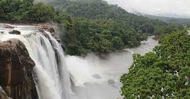
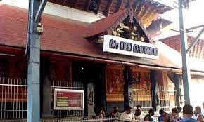

The cultural capital of Kerala, the Poorams or temple festivals in Thrissur draw in thousands of people every single year as these carnivals encapsulate every single part of Kerala's rich heritage. These are a hotbed of folk art performances and heritage tours that will give you an in depth look into some of the grandest traditions of the State. From majestic elephants to colourful pulikali processions to the world renowned Thrissur Pooram, there is always a festive atmosphere in the air. The district is also the abode of several cultural centres like Kerala Kalamandalam, Sahitya Academy and the Sangeetha Nataka Academy. Thrissur is a place one must visit at least once in their lifetime. The people, swaying with the beats of the chenda, shall help you understand the true heart and spirit of Kerala.

| Athirappilly Waterfalls | |
|---|---|
|  | Located 60 km from the Thrissur district of Kerala, Athirapally Falls is a marvellous cascade of frothy waters that makes its way from the Anamudi mountains of the Western Ghats. Also called as Bahubali Waterfall, this 80 ft high and 330 ft wide marvel is the largest waterfall in Kerala. It is often referred to as the "Niagara Falls of India". From here, the Athirapally falls flows through the verdant greenery of Vazhachal Forest toward the Arabian Sea, creating a spectacular vista of scintillating water, emerald jungles and azure sky. When you land in Athirapally, you are greeted with the sight of charming green Sholayar Peaks peering over the rushing gush of the falls. Standing against the backdrop of a rustling jungle foliage, this many films and music videos are shot here. Bird lovers cannot miss this place, for it is the only place in the Western Ghats where four endangered Hornbill species are seen. There is a pool above the falls where you can relax and unwind. To get a view of the waterfall, one needs to get down from the mountain for about 100 meters. |
| Guruvayur Temple | |
|---|---|
|  | This temple in Thrissur district, Kerala is dedicated to Lord Guruvayurappan, where lord Vishnu is worshiped as Krishna in his four armed form. Known as Bhuloka Vaikunta, the Holy abode of Vishnu on Earth, this temple is one of the important places of worship for Hindus in Kerala. The temple opens at 3.00 am for 'Nirmalya darshan' and it is a divine experience to pray during that time. After Guruvayur, it is good to visit Mammiyoor Siva temple, located a few meters away, after visiting Guruvayur. Dress code: Traditional attire like saree, salwar kameez, long skirts for women and girls and dhoti for men Mobile phones are strictly prohibited inside the temple. They can be safely deposited at the lockers right outside the temple. The temple can get very crowded on weekends and auspicious days like Ekadashi, Janmashtami etc. Punnathoor kotta, a place where elephants belonging to the temple is also closeby and can be visited if interested. |